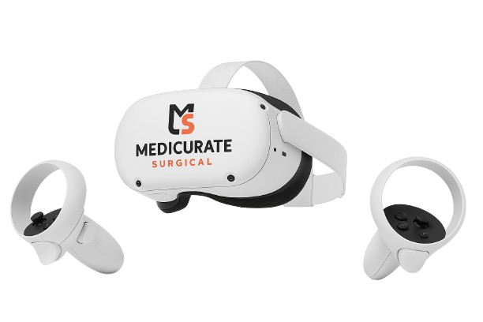
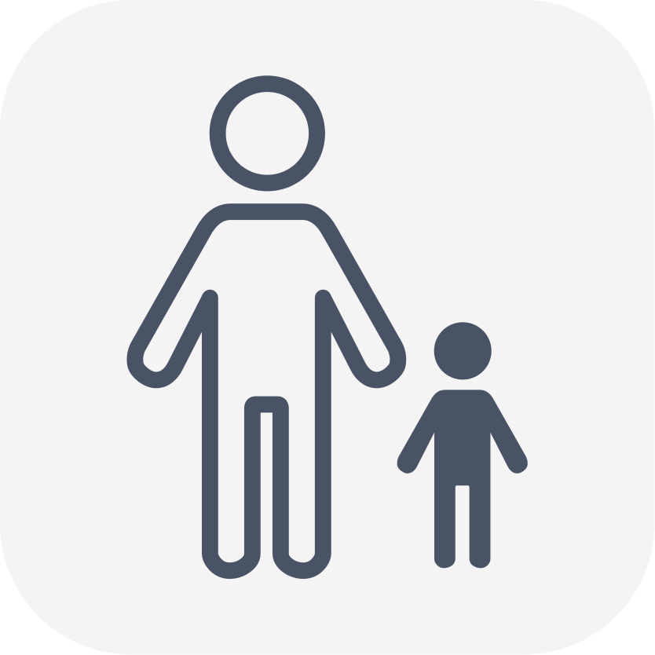

For Students
Personal Anatomy Learning
Powered by Virtual Medicine
Medicurate offers personal XR learning solutions powered by Virtual Medicine's advanced anatomical software. Designed for students and independent learners who want to deepen their understanding of the human body outside the classroom. Gain access to professional-grade visualization features. Take control of your learning journey.

Efficiency
Faster exam preparations
Our personal solutions include Virtual Medicine's advanced AR and VR anatomy applications—delivering over 13,000 anatomical structures with descriptions on your smartphone, tablet, or XR headset. Virtual and Augmented Reality technology enables you to understand spatial relationships between structures more quickly and prepare for exams more efficiently.
01
Human Anatomy VR
Developed by Virtual Medicine and integrated with hardware by Medicurate. Human Anatomy VR is an award-winning VR/AR anatomy platform designed for students, independent learners, and lifelong medical enthusiasts. Access professional-grade content with 13,000+ anatomical structures in a deeply engaging experience with excellent graphics, innovative presentation, and seamless user experience.

Student Toolkit
02
13,000+ Structures
The software provides enhanced teaching and learning options including, 15 human body systems with more than
13,000 realistic anatomical structures designed by medical professionals. Bone mapping with more than 4500
bone markings organized into parts, surfaces, borders, origin and insertion points, and landmarks.
03
Detailed Microstructures
Explore the human body in extreme detail, virtually navigating through anatomical structures to reveal the slightest details. Virtual Medicine's advanced rendering reveals discrete anatomical features for comprehensive learning.

04
Tests and Quizzes
Test your knowledge with Tests and Quizzes directly in VR – anyplace and anytime. The advanced tech enables
you to perfectly concentrate on the test, with answers automatically assessed upon completion. Wrong answers
can be redone – ideal preparation to pass an exam.
05
Hand Tracking
Interact with the virtual models naturally using hand tracking technology for a seamless learning experience.

Start Learning
Today.
Get the App